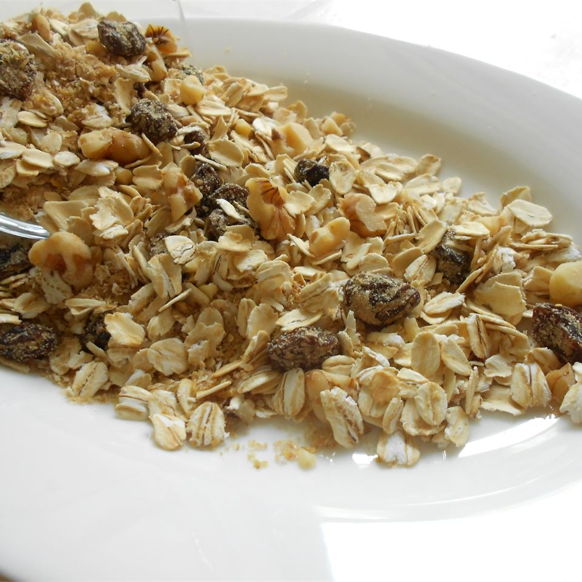

Muesli

Description
A delicious and nutritious breakfast cereal.
Ingredients
- 4 ½ cups rolled oats
- ½ cup toasted wheat germ
- ½ cup wheat bran
- ½ cup oat bran
- 1 cup raisins
- ½ cup chopped walnuts
- ¼ cup packed brown sugar
- ¼ cup raw sunflower seeds
Ingredients note: Original recipe yields 16 servings.
Directions
- In a large mixing bowl, combine oats, wheat germ, wheat bran, oat bran, dried fruit, nuts, sugar, and seeds. Mix well.
- Store muesli in an airtight container. It keeps for 2 months at room temperature.
Helpful tip: Try serving with yogurt instead of milk for a creamier breakfast.